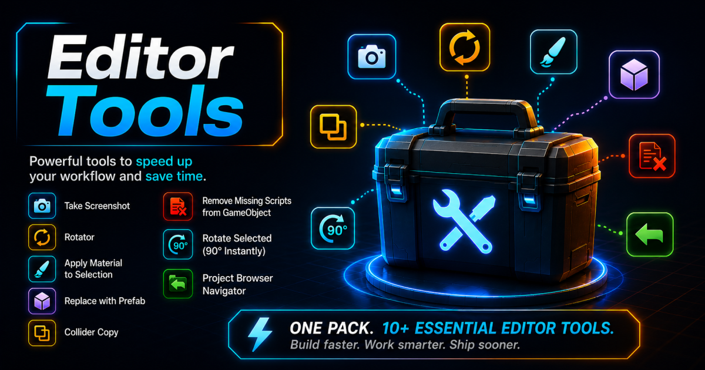
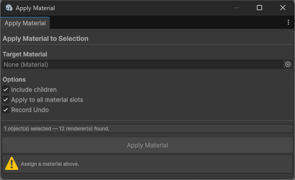
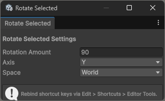
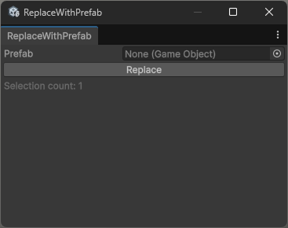
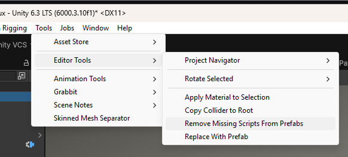
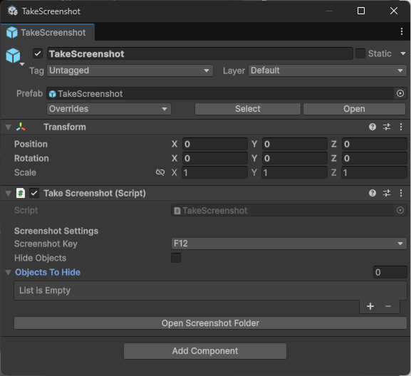
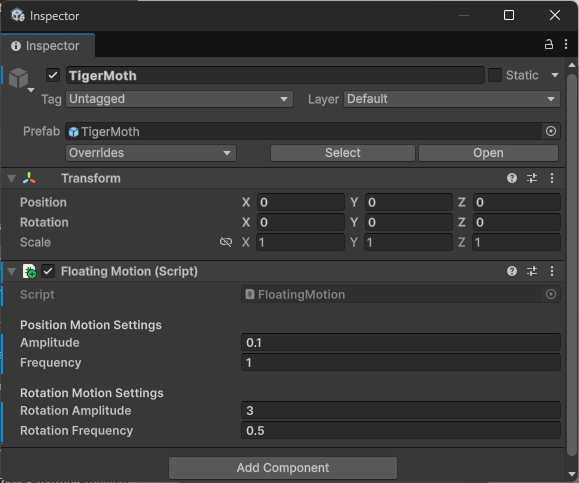
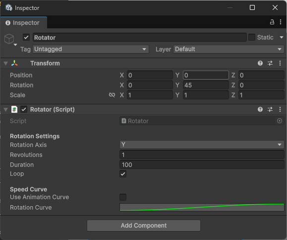
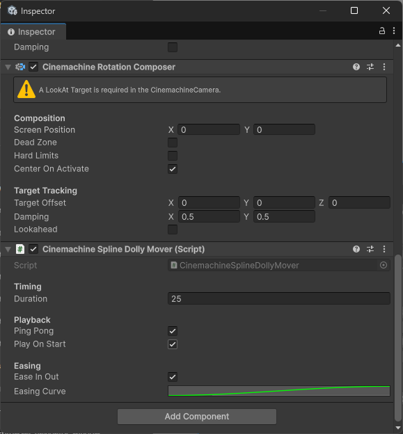

Build faster.
Work smarter.
Ship sooner.
A growing collection of lightweight Unity editor and runtime utilities. Each tool solves one real problem, integrates cleanly into the Editor, and adds zero overhead to your project.

Everything in the package
Ten tools, one package. Each one built to cut a repetitive step out of your daily Unity workflow.
Apply Material to Selection Editor
Apply a material to all Renderers on selected GameObjects in one click.
Selecting a group of objects and manually reassigning materials one by one is tedious. This window lets you drag in a target material and apply it across every Renderer on your entire selection in a single operation.

Usage
- Open the window via Tools > Editor Tools > Apply Material to Selection.
- Drag your target material into the Target Material field.
- Select the GameObjects you want to update in the Hierarchy or Scene view.
- Adjust the options as needed, then click Apply Material.
Options
| Option | Default | Description |
|---|---|---|
| Include Children | On | Also processes all child GameObjects of each selected object. |
| Apply to All Material Slots | On | Replaces every element in the sharedMaterials array. Disable to only replace slot 0. |
| Record Undo | On | Registers the operation so it can be reversed with Ctrl+Z / Cmd+Z. |
Rotate Selected Editor
Rotate scene objects by a precise amount using keyboard shortcuts.
When dressing a scene you often want to snap-rotate objects by an exact amount like 90 degrees. Rotate Selected gives you one-keypress rotation with configurable axis, space, and degrees, without touching the Inspector or manually editing Transform values.

Settings
| Setting | Default | Description |
|---|---|---|
| Rotation Amount | 90 | Degrees to rotate per keypress. |
| Axis | Y | World axis to rotate around. Options: X, Y, Z. |
| Space | World | World rotates around the world axis. Local rotates around the object's own axis. |
Keyboard Shortcuts
| Shortcut | Action |
|---|---|
| G | Rotate selected objects in the positive direction |
| Shift + G | Rotate selected objects in the negative direction |
Replace With Prefab Editor
Swap selected scene objects with a chosen prefab, preserving their transforms.
When you need to replace placeholder geometry with final prefabs, or swap out one prop variant for another across a scene, doing it object by object is slow. Replace With Prefab lets you select multiple objects, choose a target prefab, and replace them all in one click. Each new instance inherits the original object's position, rotation, scale, parent, and sibling index.

Usage
- Open the window via Tools > Editor Tools > Replace With Prefab.
- Drag your target prefab into the Prefab field.
- Select the GameObjects you want to replace in the Hierarchy.
- Click Replace. The selection count at the bottom of the window confirms how many objects will be replaced.
Copy Collider to Root Editor
Moves a CapsuleCollider from a child object to the prefab root in one click.
When importing character rigs, the physics collider often lands on a child bone rather than the root GameObject. This makes it awkward to reference at runtime and can break character controller setups that expect the collider on the root. Copy Collider to Root fixes this in one menu click by copying the CapsuleCollider component, all of its properties, up to the root and removing it from the child.
Usage
- Select the root GameObject of your character prefab in the Hierarchy or Project window.
- Go to Tools > Editor Tools > Copy Collider to Root.
- The CapsuleCollider is moved to the root and the prefab is saved automatically.
Remove Missing Scripts Editor
Find and remove null MonoBehaviour references from GameObjects and prefabs.
Deleted or renamed scripts leave behind null MonoBehaviour entries on GameObjects, which show as "Missing Script" in the Inspector. These cause console warnings and can break serialization. This tool finds and removes them, either from your current selection or from every prefab in the project at once.

Menu Locations
| Menu Path | Scope |
|---|---|
| GameObject / Editor Tools / Remove Missing Scripts | Selected GameObjects and all their children |
| Assets / Editor Tools / Remove Missing Scripts | Selected prefab assets in the Project window |
| Tools / Editor Tools / Remove Missing Scripts From Prefabs | Every prefab in the entire project |
Take Screenshot Runtime
Capture game screenshots at runtime via a configurable keypress.
Add TakeScreenshot to any GameObject in your scene to get instant screenshot capture during playtesting or in shipped builds. Screenshots are saved to a /Screenshots/ folder at the project root in the Editor, and to Application.persistentDataPath/Screenshots/ in builds. Filenames auto-increment so you never overwrite a previous capture.

Setup
- Add the TakeScreenshot component to any GameObject in your scene.
- Set your preferred Screenshot Key (default: F12).
- Optionally assign GameObjects to Objects to Hide to temporarily disable UI or debug overlays before capture.
- Press play and use your assigned key to capture. Click Open Screenshot Folder in the Inspector to browse output files.
Inspector Properties
| Property | Type | Description |
|---|---|---|
| screenshotKey | KeyCode | The key that triggers a capture. Default is F12. |
| hideObjects | bool | When enabled, the objects listed below are hidden before capture and restored afterwards. |
| objectsToHide | GameObject[] | List of GameObjects to temporarily deactivate during capture. Useful for hiding HUD or debug overlays. |
Floating Motion Runtime
Organic randomised bobbing and rotation oscillation for any GameObject.
Floating Motion adds a sinusoidal bob and rotation wobble to a GameObject that feels natural and varied. Each axis gets a random phase offset on Start, so multiple objects in the same scene never move in sync. Useful for pickups, ambient props, floating UI elements, and decorative scene dressing.

Inspector Properties
| Property | Type | Description |
|---|---|---|
| amplitude | float | Maximum distance the object moves from its start position on each axis. Default is 0.1. |
| frequency | float | Speed of the positional oscillation. Default is 1. |
| rotationAmplitude | float | Maximum degrees of rotation from the start rotation. Default is 1. |
| rotationFrequency | float | Speed of the rotation wobble. Default is 0.5. |
Rotator Runtime
Simple continuous or single-cycle rotation with AnimationCurve easing support.
Rotator handles the common need for a continuously spinning or single-pass rotating object, from radar dishes to fan blades to loading spinners. You can drive it at constant speed or use an AnimationCurve to create a spin that starts fast and eases to a stop, spins up slowly, or any custom timing you define.

Inspector Properties
| Property | Type | Description |
|---|---|---|
| rotationAxis | Axis (X/Y/Z) | The axis to rotate around. |
| revolutions | float | Number of complete 360 degree rotations per cycle. Default is 1. |
| duration | float | Duration of one full rotation cycle in seconds. Default is 1. |
| loop | bool | When enabled the rotation repeats continuously. When disabled it stops after one cycle and disables the component. |
| useAnimationCurve | bool | When enabled the rotation speed follows the curve below instead of running at constant speed. |
| rotationCurve | AnimationCurve | X axis is normalised time (0 to 1 over duration). Y axis is rotation progress (0 to 1 over total revolutions). |
Public API
| Method | Description |
|---|---|
| Restart() | Resets elapsed time to zero, re-anchors the start rotation to the current rotation, and re-enables the component. |
Cinemachine Spline Dolly Mover Runtime Requires Cinemachine
Drives a CinemachineSplineDolly along its spline over time.
CinemachineSplineDollyMover automates camera movement along a Cinemachine spline path. Attach it to the same GameObject as your CinemachineSplineDolly and it will animate the camera position from 0 to 1 along the spline over a set duration. Supports ping-pong for back-and-forth motion, configurable easing via an AnimationCurve, and a public API for triggering playback from code or UnityEvents.

Setup
- Ensure the Cinemachine package is installed via Window > Package Manager.
- Create a Cinemachine Camera with a SplineDolly component and a Spline Container path.
- Add the CinemachineSplineDollyMover component to the same GameObject.
- Configure duration, ping-pong, and easing, then press Play.
Inspector Properties
| Property | Type | Description |
|---|---|---|
| duration | float | Time in seconds to move from position 0 to position 1 along the spline. Default is 5. |
| pingPong | bool | When enabled the camera reverses direction when it reaches the end and travels back to the start. |
| playOnStart | bool | Automatically begins playback when the scene starts. Default is true. |
| easeInOut | bool | Applies the easing curve below to smooth the start and end of the movement. Default is true. |
| easingCurve | AnimationCurve | Custom curve controlling how position progresses over time. Only used when Ease In Out is enabled. |
Public API
| Method | Description |
|---|---|
| Play() | Starts or resumes playback from the current position. |
| Stop() | Pauses playback at the current position. |
| Restart() | Resets position to 0 and begins playback from the start of the spline. |
More tools from the same publisher
Other assets in the Cerberus Bytes catalogue you might find useful.
Need help or have ideas?
Bug reports, feature requests, and questions are all welcome. New tools are added to this pack over time, so suggestions are especially appreciated.